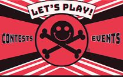
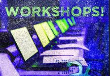
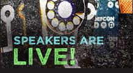

Contests and Events at DEF CON 26 posted!  Now that you’ve had a whole day to absorb the epic Village list, we’ve got some more goodies for you. The Contests and Events page is now LIVE, and it’s also quite a bit to take in. Ranging from the straightforward elegance of the Tin Foil Hat Challenge to the complexity of an Industrial Control Systems CTF competition, there’s contests here for just about any hacker discipline, and every level of skill or experience. Contests are also a great way for the shyer among us to beat the icebreaker blues and get right into some fun with a bunch of likeminded strangers. The more extroverted attendees can still opt for a Charity Mohawk or the cringetastic glory of Hacker Karaoke. Block off a little time for pre-con recon and make a plan to make sure you get to sample widely from the smorgasbord of C&E offerings. Our reunion draws ever closer, fam. Get amped.
Demo Labs for DEF CON 26 Posted! More DEF CON 26 goodies for your perusal – Demo Labs are Live! You should take a moment to check out the lineup, and set aside some time to visit when you’re at the Con. In addition to being a cool way to see what your fellow hackers are working on, it’s an opportunity to offer your expertise, meet potential collaborators and help push the community forward. Demo Labs are interactive, so, you know, interact. Just over a month, people!
DEF CON 26 Workshops!  Another milestone on the Road to DEF CON 26! The workshops page is live on the DEF CON site. Registration is still a ways off - July 8, to be precise, but now is the perfect time to get yourself familiar with the offerings. The spots traditionally fill up pretty quick, so be ready to claim your seat when the light turns green next month, maybe even consider a few backups. It’s officially summertime in our host hemisphere - the season of DEF CON has begun!
The Entire lineup of DEF CON 26 Talks is Live!  DEF CON family, the time of our reunion approaches. In just a few days, summer arrives in the Northern Hemisphere. The pages of the calendar turn, ever closer to August. Today comes the surest sign - the DEF CON 26 speaker list is live on DEFCON.org. The wait is over - dig into the list to start your conference planning! We’re proud of the lineup we’ve created this year, and we think whatever your particular itch you’ll find some talks and panels that scratch it for you. We’d also like to take a moment to thank the undersung heroes of the Selection Committee. They devote crazy amounts of time and energy to working through hundreds and hundreds of proposals to make sure the best ones make it to the top of the pile. They work hard, they make us great and they deserve your appreciation. It’s almost here, hacker fam. Can you feel it?